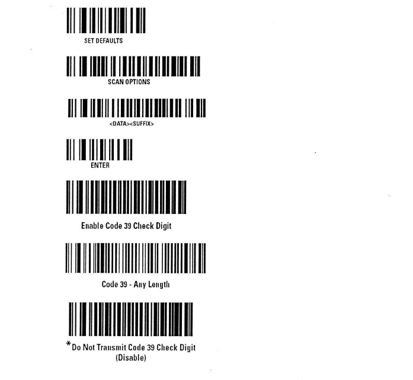

В частности, в программах TradeService и TSPos некорректно сканировались "Заказы покупателей", данные из "Кредитных договоров".
Присутствовали лишние символы и т.д.
То, что ниже, делает процедуру сканирования данных типов в программах корректным.
Опробовано на 2-х магазинах, где сканеры меняли.
Прочитать по очереди все ШК:
